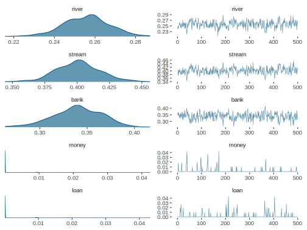
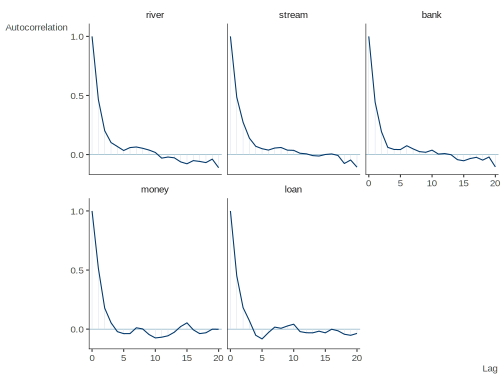

Topic Model
An implementation of Gibbs sampling for topic models for the example in section 4 of Steyvers and Griffiths (2007). A very clear intro in my opinion. The core of the function’s code comprises mostly cosmetic changes to that found here. Added are the creation of a function with several arguments, plotting etc.
Data Setup
library(tidyverse)
vocab = factor(c("river", "stream", "bank", "money", "loan"))
K = 2 # n of topics
v = length(vocab) # number of unique words
d = 16 # number of documents Topic 1 gives equal probability to money loan and bank (zero for river and stream). Topic 2 gives equal probability to river stream and bank (zero for money and loan).
Next we create a document term matrix. Each doc consists of a mix of 16 tokens of the vocab- the first few regard financial banks, the last several water banks, and the docs in between possess a mixed vocab.
dtm = matrix(c(0,0,4,6,6,
0,0,5,7,4,
0,0,7,5,4,
0,0,7,6,3,
0,0,7,2,7,
0,0,9,3,4,
1,0,4,6,5,
1,2,6,4,3,
1,3,6,4,2,
2,3,6,1,4,
2,3,7,3,1,
3,6,6,1,0,
6,3,6,0,1,
2,8,6,0,0,
4,7,5,0,0,
5,7,4,0,0), ncol = v, byrow = TRUE)
rownames(dtm) = paste0('doc', 1:d)
colnames(dtm) = vocabNext we create additional objects to initialize the setup.
# matrix of words in each document
wordmat = t(apply(dtm, 1, function(row) rep(vocab, row)))
# initialize random topic assignments to words
T0 = apply(wordmat, c(1, 2), function(token) sample(1:2, 1))
# word by topic matrix of counts containing the number of times word w is
# assigned to topic j
C_wt = sapply(vocab, function(word) cbind(sum(T0[wordmat == word] == 1),
sum(T0[wordmat == word] == 2)))
C_wt = t(C_wt)
rownames(C_wt) = vocab
# topic by document matrix of counts containing the number of times topic j is
# assigned to a word in document d
C_dt = t(apply(T0, 1, table))Function
Note that this function is not self contained in that it uses some of the objects created above, assuming they are in the global environment. It has the capacity for a pseudo-visualization which can be instructive, but isn’t shown for this document (and it requries corrplot), and I haven’t tested it recently.
topic_model <- function(
alpha,
beta,
nsim = 2000,
warmup = nsim / 2,
thin = 10,
verbose = TRUE,
plot = FALSE,
dotsortext = 'dots'
) {
# Arguments:
# alpha and beta: hyperparameters
# nsim: the total number of simulations
# warmup: the number of initial sims to discard
# thin: keep every thin simulation after warmup
# verbose: to print every 100th iteration and total time
# plot: to visualize every x sim; the plot will show current estimates of
# theta, phi, and topic assignments for each term in the docs; can be
# visualized as dots or the actual terms; for the latter you may need to
# fiddle with your viewing area size so that terms don't appear to run
# together; plotting will increase runtime
# requires corrplot for visualizations, and abind to create arrays from the
# lists.
# initialize
Z = T0 # topic assignments
saveSim = seq(warmup + 1, nsim, thin) # iterations to save
theta_list = list() # saved theta estimates
phi_list = list() # saved phi estimates
p = proc.time()
# for every simulation...
for (s in 1:nsim) {
if(verbose && s %% 100 == 0) { # paste every 100th iteration if desired
secs = round((proc.time() - p)[3],2)
min = round(secs/60, 2)
message(paste0(
'Iteration number: ',
s,
'\n',
'Total time: ',
ifelse(secs <= 60, paste(secs, 'seconds'), paste(min, 'minutes'))
))
}
# Visualization
if(plot > 0 && s >1 && s %% plot == 0) { # plot every value of argument
require(corrplot)
layout(matrix(c(1, 1, 2, 2, 3, 3, 3, 3, 3, 3), ncol = 10))
corrplot(
theta,
is.corr = FALSE,
method = 'color',
tl.cex = .75,
tl.col = 'gray50',
cl.pos = 'n',
addgrid = NA
)
corrplot(
phi,
is.corr = FALSE,
method = 'color',
tl.cex = 1,
tl.col = 'gray50',
cl.pos = 'n',
addgrid = NA
)
if (dotsortext == 'dots') {
Zplot = Z
Zplot[Zplot == 2] = -1
corrplot(
Zplot,
is.corr = FALSE,
method = 'circle',
tl.cex = .75,
tl.col = 'gray50',
cl.pos = 'n',
addgrid = NA
)
} else {
cols = apply(Z, c(1, 2), function(topicvalue)
ifelse(topicvalue == 1, '#053061', '#67001F'))
plot(
1:nrow(wordmat),
1:ncol(wordmat),
type = "n",
axes = FALSE,
xlab = '',
ylab = ''
)
text(col(wordmat),
rev(row(wordmat)),
wordmat,
col = cols,
cex = .75)
}
}
# for every document and every word in the document
for (i in 1:d) {
for (j in 1:length(wordmat[i,])) {
word.id = which(vocab == wordmat[i, j])
topic.old = Z[i, j]
# Decrement counts before computing equation (3) in paper noted above
C_dt[i, topic.old] = C_dt[i, topic.old] - 1
C_wt[word.id, topic.old] = C_wt[word.id, topic.old] - 1
# Calculate equation (3) for each topic
vals = prop.table(C_wt + beta, 2)[word.id,] * prop.table(C_dt[i,] + alpha)
# Sample the new topic from the results for (3);
# note, sample function does not require you to have the probs sum to 1
# explicitly, i.e. prob=c(1,1,1) is the same as prob = c(1/3, 1/3, 1/3)
Z.new = sample(1:K, 1, prob = vals)
# Set the new topic and update counts
Z[i,j] = Z.new
C_dt[i, Z.new] = C_dt[i, Z.new] + 1
C_wt[word.id, Z.new] = C_wt[word.id, Z.new] + 1
}
}
theta = prop.table(C_dt + alpha,1) # doc topic distribution
phi = prop.table(C_wt + beta,2) # word topic distribution
# save simulations
if (s %in% saveSim){
theta_list[[paste(s)]] = theta
phi_list[[paste(s)]] = phi
}
}
layout(1) # reset plot window
list(
theta = theta,
phi = phi,
theta_sims = abind::abind(theta_list, along = 3),
phi_sims = abind::abind(phi_list, along = 3)
)
}Estimation
We use the values of alpha and beta as suggested in paper. The following will result in 500 posterior sample points, so bump if you want more than that. These settings take around 20 seconds.
set.seed(1234)
alpha = K/50
beta = .01
fit_tm = topic_model(
alpha = alpha,
beta = beta,
nsim = 1000,
warmup = 500,
thin = 1,
verbose = FALSE,
plot = FALSE
)Comparison
First we can explore the results, in particular topic assignment probabilities and term topic probabilities.
str(fit_tm, 1)List of 4
$ theta : num [1:16, 1:2] 0.00249 0.00249 0.00249 0.00249 0.00249 ...
..- attr(*, "dimnames")=List of 2
$ phi : num [1:5, 1:2] 0.267293 0.415735 0.316774 0.000099 0.000099 ...
..- attr(*, "dimnames")=List of 2
$ theta_sims: num [1:16, 1:2, 1:500] 0.00249 0.00249 0.00249 0.00249 0.00249 ...
..- attr(*, "dimnames")=List of 3
$ phi_sims : num [1:5, 1:2, 1:500] 2.38e-01 4.00e-01 3.62e-01 9.52e-05 9.52e-05 ...
..- attr(*, "dimnames")=List of 3purrr::map(fit_tm[1:2], round, 2)$theta
1 2
doc1 0.00 1.00
doc2 0.00 1.00
doc3 0.00 1.00
doc4 0.00 1.00
doc5 0.00 1.00
doc6 0.00 1.00
doc7 0.06 0.94
doc8 0.19 0.81
doc9 0.50 0.50
doc10 0.44 0.56
doc11 0.44 0.56
doc12 0.81 0.19
doc13 0.87 0.13
doc14 1.00 0.00
doc15 1.00 0.00
doc16 1.00 0.00
$phi
[,1] [,2]
river 0.27 0.00
stream 0.42 0.00
bank 0.32 0.41
money 0.00 0.31
loan 0.00 0.28Now we can compare our result to reported paper estimates for \(\phi\) and topicmodels package (note delta is the beta above; the vignette actually references Steyvers & Griffiths paper).
library(topicmodels)
fit_lda = LDA(
dtm,
k = 2,
method = 'Gibbs',
control = list(
alpha = alpha,
delta = .01,
iter = 5500,
burnin = 500,
thin = 10,
initialize = 'random'
)
)Start with \(\phi\) estimates. Note that the labels of what is topic 1 vs. topic 2 is arbitrary, the main thing is the separation of the words that should go to different topics, while bank is probable for both topics.
| fit.1 | fit.2 | paper.1 | paper.2 | ldapack.1 | ldapack.2 | |
|---|---|---|---|---|---|---|
| river | 0.27 | 0.00 | 0.00 | 0.25 | 0.29 | 0.00 |
| stream | 0.42 | 0.00 | 0.00 | 0.40 | 0.46 | 0.00 |
| bank | 0.32 | 0.41 | 0.39 | 0.35 | 0.25 | 0.44 |
| money | 0.00 | 0.31 | 0.32 | 0.00 | 0.00 | 0.29 |
| loan | 0.00 | 0.28 | 0.29 | 0.00 | 0.00 | 0.27 |
Interval estimates for term probabilities for each topic.
library(coda)
phi_estimates_topic_1 = as.mcmc(t(fit_tm$phi_sims[, 1, ]))
phi_estimates_topic_2 = as.mcmc(t(fit_tm$phi_sims[, 2, ]))
# summary(phi_estimates_topic_1)| rowname | Topic | lower | upper |
|---|---|---|---|
| river…1 | Topic 1 | 0.24 | 0.28 |
| stream…2 | Topic 1 | 0.36 | 0.43 |
| bank…3 | Topic 1 | 0.29 | 0.38 |
| money…4 | Topic 1 | 0.00 | 0.01 |
| loan…5 | Topic 1 | 0.00 | 0.01 |
| river…6 | Topic 2 | 0.00 | 0.01 |
| stream…7 | Topic 2 | 0.00 | 0.00 |
| bank…8 | Topic 2 | 0.36 | 0.42 |
| money…9 | Topic 2 | 0.30 | 0.33 |
| loan…10 | Topic 2 | 0.27 | 0.30 |
Symmetrized or mean Kullback-Liebler divergence for topic (dis)similarity.
kl_divergence = .5 * sum(
apply(
fit_tm$phi,
1, function(row) row[1] * log2(row[1] / row[2]) + row[2] * log2(row[2] / row[1])
)
)
kl_divergence[1] 7.678387We can compare with various other packages for KL-divergence (not shown).
mean(c(
entropy::KL.empirical(fit_tm$phi[,1], fit_tm$phi[,2], unit = 'log2'),
entropy::KL.empirical(fit_tm$phi[,2], fit_tm$phi[,1], unit = 'log2')
))Symmetrized or mean Kullback-Liebler divergence for document (dis)similarity.
# example
docs2compare = c(1, 16)
.5 * sum(apply(fit_tm$theta[docs2compare, ], 2,
function(topicprob)
topicprob[1] * log(topicprob[1] / topicprob[2]) +
topicprob[2] * log(topicprob[2] / topicprob[1])))[1] 5.964141Let’s create a function to work on theta to produce Kullback-Liebler or Jensen-Shannon divergence.
divergence <- function(input, method = 'KL') {
if (method == 'KL') {
.5 * sum(apply(fit_tm$theta[input, ], 2,
function(topicprob)
topicprob[1] * log2(topicprob[1] / topicprob[2]) +
topicprob[2] * log2(topicprob[2] / topicprob[1])))
}
else {
.5 * sum(apply(fit_tm$theta[input, ], 2,
function(topicprob)
topicprob[1] * log2(topicprob[1] / mean(topicprob)) +
topicprob[2] * log2(topicprob[2] / mean(topicprob))))
}
}Now apply to all pairs of documents.
# Now do for all
docpairs = combn(1:d, 2)
kl_divergence = apply(docpairs, 2, divergence)
mat0 = matrix(0, d, d)
mat0[lower.tri(mat0)] = kl_divergence
kl_divergence = mat0 + t(mat0)
dimnames(kl_divergence) = list(rownames(dtm))We can visualizes as follows, red implies documents are more dissimilar.
Likewise, we can visualize Jensen-Shannon divergence.
js_divergence = apply(docpairs, 2, divergence, method = 'JS')Here are examples of diagnostics with the word topic probability estimates. These use the bayesplot package.
library(bayesplot)
mcmc_combo(phi_estimates_topic_1)
mcmc_acf(phi_estimates_topic_1)
Source
Original code available at: https://github.com/m-clark/Miscellaneous-R-Code/blob/master/ModelFitting/Bayesian/topicModelgibbs.R